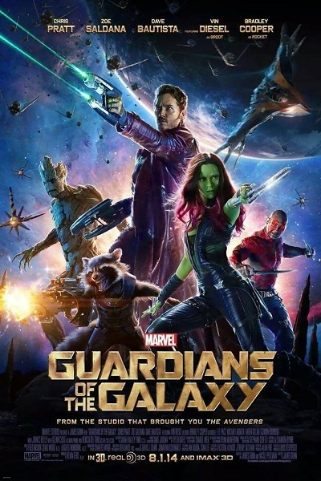
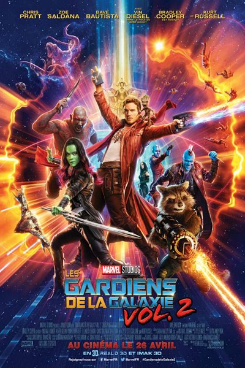

 Les Gardiens de la Galaxie est un film ayant pour principe un rassemblement de différents héros (comme ça a été le cas plus tôt pour les Avengers), sauf qu'ici l'histoire ne se déroule pas sur la planète Terre. En effet l'histoire des Gardiens de la Galaxie repose sur Star-Lord, un hors-la-loi qui va dérober une orbe, et va rencontrer en prison ceux qui seront ses futures compagnons : Rocket Raccoon, Groot, Drax et Gamora. Leur premier but commun sera de sortir de cette prison, mais Star-Lord parviendra ensuite à les rallier tous à sa cause afin de sauver la Galaxie. Ce film aura un franc succès à sa sortie, en effet il change des films habituels de superhéros de chez Marvel, on y retrouve plus d'humour, des personnages moins clichés également. Mais ce qui fera une partie du succès de ce film, c'est bien évidemment la bande-son. En effet cette bande-son est le contenu de la cassette que donne la mère de Star-Lord à son films au début du film, et on y retrouve des morceaux rappelant fortement les années 70 et 80.
 Ce film est la suite direct du premier opus sorti 3 ans plus tôt. En effet dans les Gardiens de la Galaxie vol.2, on y retrouve toujours les mêmes personnages (malgré un Groot changé en "Bébé Groot"). On y suivra une nouvelle les aventures de cette équipe à travers la Galaxie, où de vieux ennemis deviennent de nouveaux. Le film est encore une fois accompgnée d'une bande-son atypique, nommée "Awesome Mix vol.2". Mais à sa sortie le film rencontrera un succès moins franc que son prédécesseur, en effet la surprise de la nouvelle franchise n'était plus au rendez-vous pour les spectateurs qui savaient à quoi s'attendre, mais recevra malgré un bon accueil du public.